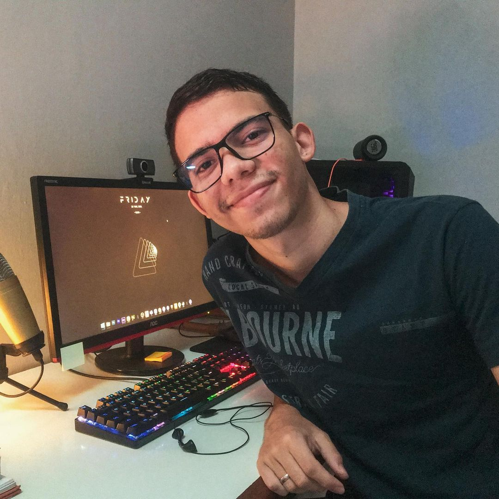

Ailson Azevedo
Filmmaker
Nunca deixe de
|

|
Sobre mimConhecido como Ailson Azevedo, filmmaker, apaixonado por produção de videos desde 2017, onde produzia vídeos para o YouTube. Apartir de 2019 resolveu explorar novas áreas, aprender mais sobre e atuar como freelancer no mundo do audiovisual e fotografia. |
 |
Quality, not quantity
We have made quality our habit. It’s not something that we just strive for – we live by this principle every day.